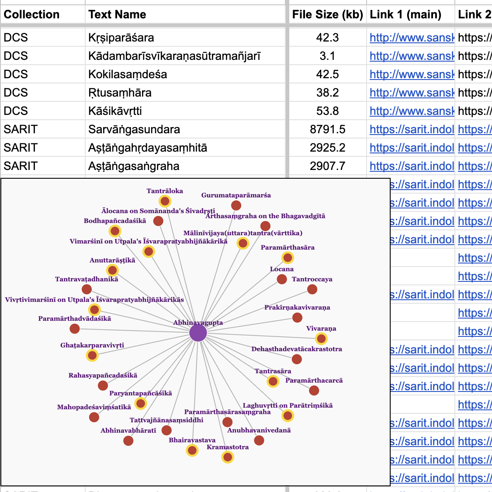
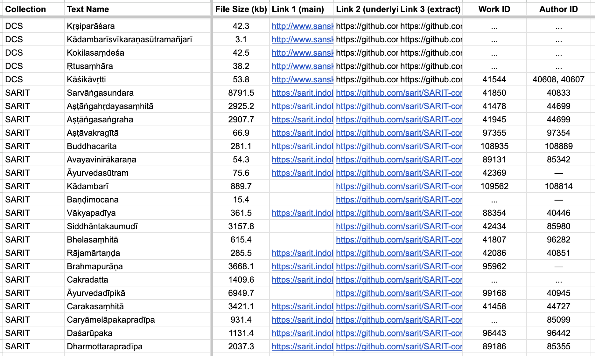
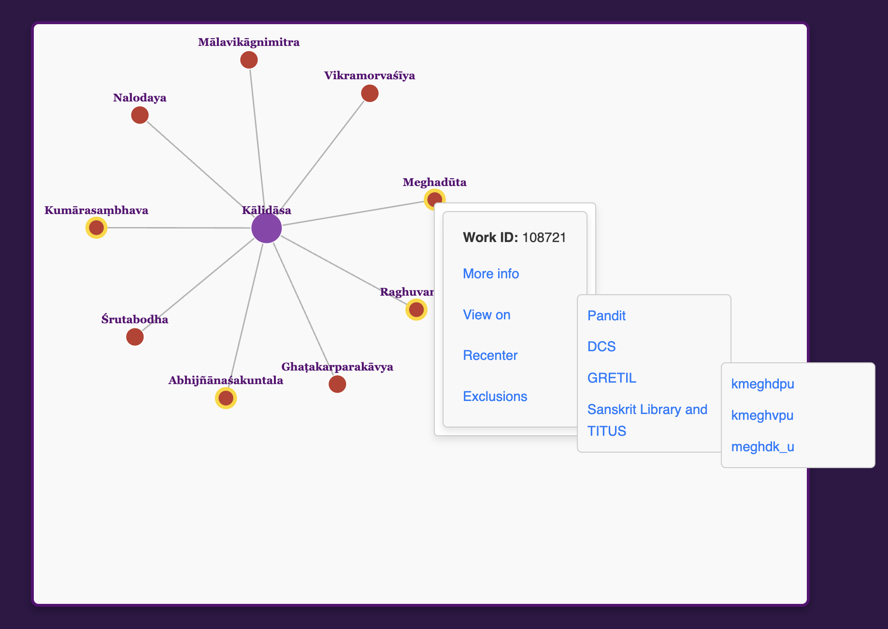

Sanskrit E-Texts Adrift
Just as the Sanskrit works selected for critical editions and printed volumes reflect scholarly priorities over the last 150 or so years, the corpus of fully searchable e-texts reveals the interests of modern Sanskritists over the past 30 or so. But whereas library catalogs and bibliographies generally help us discover printed books (even if access can depend on affiliation or location), no such centralized and up-to-date index exists for digitized Sanskrit texts. Once upon a time, GRETIL filled this gap, but no longer.
As noted previously on this blog, GRETIL is not just another index or "register" of where to find Sanskrit texts online. Over time it came to host thousands of files, ensuring reliable access as many smaller sources inevitably vanished. Its liberal curation, transparent one-page layout, and mass-download feature also added to its usefulness and popularity. Other registers or lists of links (e.g., Indology, Sanskrit Heritage, etc.) and specialty repositories (e.g., Sanskrit Library) have of course also played important roles, but none have matched GRETIL's breadth and influence.
Today, however, with no updates in over four years, GRETIL's register and hosting functions are both effectively in zombie mode: still up and around, doing things in the world, but not alive enough to experience new updates or growth. With no direct successor covering the same functions and range of materials as GRETIL, the ongoing project of producing Sanskrit e-texts risks disappearing into fragmented, hard-to-find corners of the web.
Enter SETI and Pāṇḍitya
To revive the idea of a living catalog of Sanskrit e-texts, but covering all major collections, both now and into the future, I built SETI—the Sanskrit E-Text Inventory (or, cheekily, the Search for E-Textual Intelligence). SETI aggregates metadata from major collections, abstracting across four axes:
- Interface: location on the web and particulars of site navigation
- Metadata: encoding formats, terminology, file attributes (e.g., filesize)
- Names and orthography: alternate titles, author variants, transliteration differences
- Content: base texts, commentaries, multi-work bundles, etc.
Crucially, by treating the Work (abstract entity) as primary and mapping each Text (specific instantiation) onto it, SETI unifies non-essential variation under fixed identifiers while preserving important distinctions, e.g., among works or authors with similar names. To achieve this, SETI leverages the Pandit Project database—home to abstracted records for 12,700 works and 3,800 authors, all with unique numerical identifiers—which also powers SETI's sister project, Pāṇḍitya.
From Scrape to Spreadsheet to D3 Dropdowns
Here's how it comes together:
- Metadata extraction: scrape and/or manually collect metadata from target collections (six to start: GRETIL, SARIT, Sanskrit Library, Digital Corpus of Sanskrit, Pramana NLP, and Muktabodha's KSTS collection—many thanks to the Dharmamitra team for a great head-start on GRETIL!)
- Field curation: record Work and Author names, filesize, and stable URLs
- Disambiguation: map entries to the Pandit Project's numeric Work and Person IDs
- Semi-automation: use custom scripts to accelerate repetitive tasks and provide consistency checks, while relying on manual research to ensure accuracy
- Ingestion: automatically transform and load tabular data into the Pāṇḍitya web app for graph visualization with d3.forceSimulation

The outcome is an open, human-readable spreadsheet (with linked sheets per component source) at panditya.info/seti, where summary information for each collection is also available.

In turn, in Pāṇḍitya's network graphs (as of v2.3, publicly released in April 2025), work nodes highlighted in gold offer right-click links to all associated e-texts, e.g., the node for Kālidāsa's Meghadūta reveals all versions available in the collections treated so far.

Next Frontiers in Charting the Sanskrit E-Text Galaxy
SETI already covers six repositories and over 1,600 Sanskrit e-text items. Next steps:
- Expand coverage: integrate additional public repositories (draft sheets for six more sources are already shared publicly, including Sanskrit Documents and UTA Dharmaśāstra)
- Update Pandit: feed SETI insights back into Pandit, creating and connecting hundreds of new entities to expose the full e-text landscape (currently, 27% of the ~1,600 e-text items lack Pandit work entities to map onto)
- Automated updates: periodically re-scrape still-growing collections to pick up updates and new entries
- Quality control: automatically detect dead links and metadata inconsistencies
- User feedback: engage users via source and master sheets to integrate corrections
- Versioning: date-stamp updates and archive past data
A key remaining challenge is nested texts, i.e., single e-texts containing multiple works (most frequently base text plus one or more commentaries) or works embedded within others. To manage this, I currently:
- Respect commentaries as standalone works (e.g., not linking to all Spandakārikās commentary e-texts from the Spandakārikās node), and relying on Pandit connections to spell out further relationships
- Respect which embedded entities are granted work status in Pandit (e.g., not further cross-linking Bhagavadgīta and Bhīṣmaparvan items)
This balance between completeness and clarity will likely evolve as SETI matures.
To wrap up, with SETI now live and woven into Pāṇḍitya's Pandit-network visuals, Sanskrit e-texts are more discoverable than ever, and digitization gaps are also easy to see. So, we can easily see what's already out there, be more confident about what's missing, and work together to keep things moving.
In the next post, we'll tackle the second half of GRETIL's legacy: a dynamic repository for welcoming new contributions of academic Sanskrit e-texts. Stay tuned!
(EDIT 2 May 2025: For those who want more detail, the pre-print of my Pāṇḍitya-SETI paper for WSC 19 (Kathmandu) is available now to read on Academia.
EDIT 16 May 2025: I was also interviewed about the project by Raj Balkaran for the Indian Religion podcast of the New Books Network: Pāṇḍitya: Mapping Sanskrit Texts Online.)